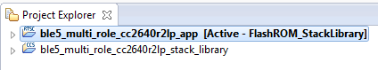

Developing with CCS¶
Installing Code Composer Studio (CCS)¶
The CCS toolchain contains many features beyond the scope of this document. More information and documentation can be found on the Code Composer Studio tool page.
Check the BLE-Stack 3.03.05.00 release notes to see which CCS version to use and any required workarounds. Object code produced by CCS may differ in size and performance as compared to IAR produced object code.
The following procedure describes installing and configuring the correct version of CCS and the necessary tools.
Install Code Composer Studio for Arm
- Download Code Composer Studio .
- Start the installation process and accept the license agreement. It is recommended to install CCS in its default location.
- In the Processor Support section, select SimpleLink CC13xx and CC26xx Wireless MCUs.
- Under the Debug Probes section, CCS will install support for TI XDS Debug Probe Support. This option supports the XDS110 debugger.
- Start the installation by selecting Finish.
Attention
The CCS version required is stated in the release notes.
Verify Arm Compiler Tools version
- If needed, the CCS and Arm compiler versions can be verified by going to into Help -> About Code Composer Studio. Under the Installation Details button, you can determine the Arm Compiler Tools version. Please ensure this version satisfies the version requirements as stated in the release notes.
- If an update is required, refer to Installing a Specific TI Arm Compiler for the procedure to install the required TI Arm Compiler version.
Installing a Specific TI Arm Compiler¶
To install a specific TI Arm Compiler, refer to the following steps and Figure 9.
- Help -> Install New Software
- Under the Work with: drop-down list, select Code Generation Tools Update
- Uncheck Show only the latest versions of available software
- Expand TI Compiler Update.
- Select the desired Arm Compiler Tools version as stated in the release notes.
- Press Next to complete the installation. You may have to restart CCS afterwards.
Discovering CCS products¶
Code Composer Studio automatically discovers the SimpleLink CC2640R2 SDK if it installed in its
default installation directory (c:/ti). Once discovered by CCS, it defines a
build environment variable named COM_TI_SIMPLELINK_CC2640R2_SDK_INSTALL_DIR
which is used by BLE-Stack projects.
If a BLE-Stack project is imported from a path other than what was specified
during the SimpleLink CC2640R2 SDK installation, the COM_TI_SIMPLELINK_CC2640R2_SDK_INSTALL_DIR
variable must be redefined after the import proceeding at a project-by-project
basis.
To redefine this variable:
Open the CCS project’s properties (Project -> Properties)
Navigate to Resource -> Linked Resources and edit
COM_TI_SIMPLELINK_CC2640R2_SDK_INSTALL_DIRand have it point to your imported root directory location.
Importing CCS projects¶
This section describes how to import and build an existing project and references the multi_role project. All of BLE-Stack projects included in the development kit have a similar structure.
Open the CCS IDE from the Start Menu.
Create a workspace.
Attention
Ensure that the CCS workspace path does not contain a whitespace.
Import a CCS Project using Resource Explorer
- Open Resource Explorer (if not open already) View -> Resource Explorer
- Navigate to the CCS folder for your chosen example: E.g. Software -> SimpleLink CC2640R2 SDK -> Examples -> CC2640R2F LaunchPad -> ble5stack -> multi_role -> TI-RTOS -> CCS Compiler -> multi_role_app

Figure 11. Import CCS Projects
Select the CCS Logo button to import project into Project Explorer
Attention
The import process will also install the SimpleLink CC2640R2 SDK if a local version does not exist. You must accept the End User License Agreement to proceeed.

Figure 12. Install SimpleLink CC2640R2 SDK
- If you get a pop-up window with an error message, under “Details >>” saying “Error: A project with the name ‘xx_stack_library’ already exists in the workplace!”, that is fine. You accidentally imported the stack twice. Just click OK.
- If everything is successful, one or two projects should appear in Resource Explorer: For BLE example projects: one for the application code and one for the stack code (either stack or stack_library project).
Note
Only projects part of the BLE stack will have an app and a stack project.
Figure 13. Projects Imported into CCS
Attention
Do not use the Rename option found inside CCS to rename your project.
This may change certain build parameters and not others, which can lead to
build errors and is irreversible.
To rename a project, you should use the Copy and paste options found
inside CCS. As you Paste the project, you have the option of choosing a
new project name. This process is to be repeated for both application and
stack projects.
After pasting both project, you need to modify the application project’s properties and update its “Project Reference” (need to show advanced settings) to only select newly pasted stack project.
Accessing Preprocessor Symbols¶
Various C preprocessor symbols may need to be set or adjusted at the project level. The following procedure describes how to access and modify preprocessor symbols.
- Open Project Properties
- Navigate to Build -> ARM Compiler -> Predefined Symbols
- Use the buttons highlighted in Figure 14. to add, delete, or edit a preprocessor.

Figure 14. CCS Predefined Symbols
Certain projects also use a list of predefined symbols found in the
TOOLS -> defines project folder.
Accessing Linker Symbols¶
Linker symbols may need to be set or adjusted at the project level in order to control the memory layout of the generated image. The following procedure describes how to access and modify linker symbols.
- Open Project Properties
- Navigate to Build -> ARM Linker -> Command File Preprocessing
- Use the buttons highlighted in Figure 15. to add, delete, or edit a linker symbol.

Figure 15. CCS Linker Symbols

{kind=link}
{kind=link}